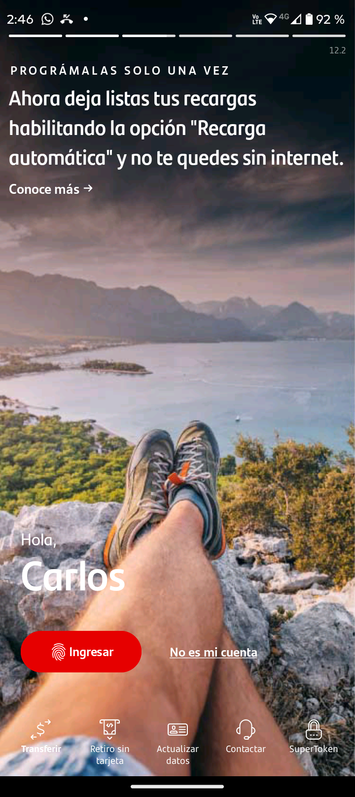
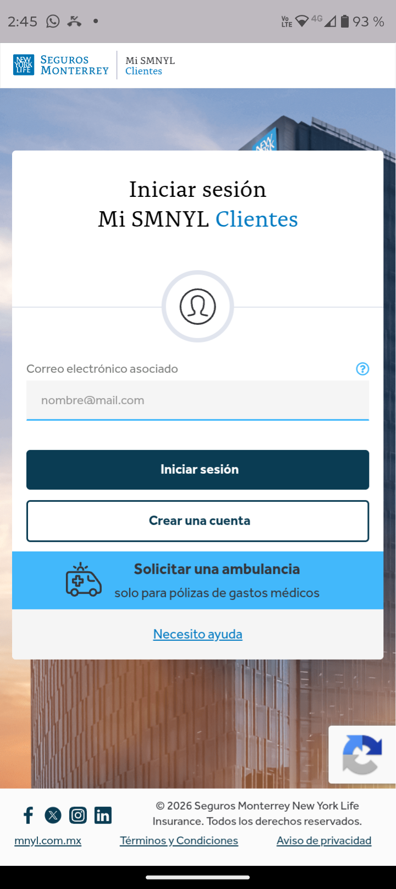
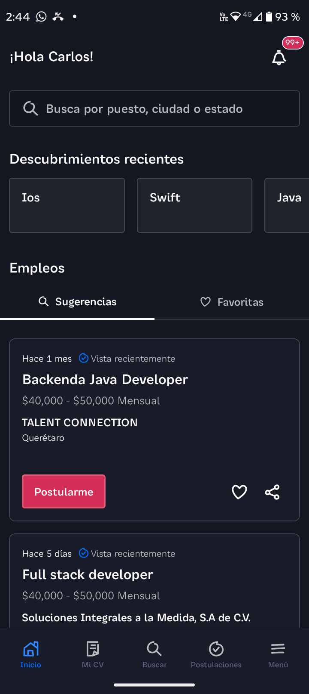
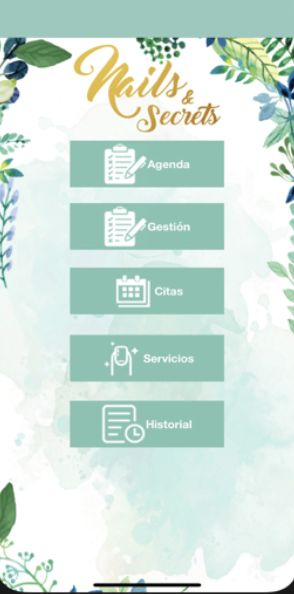
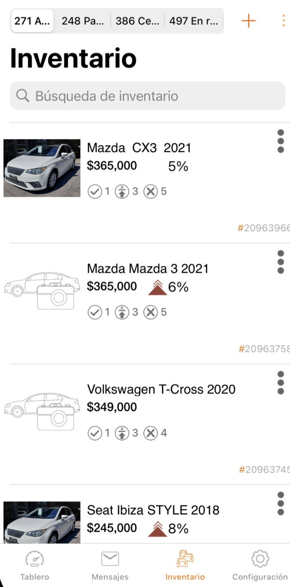
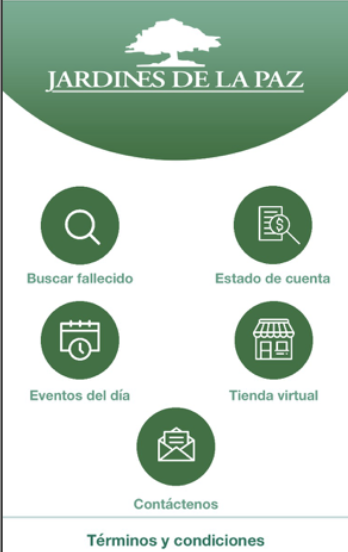
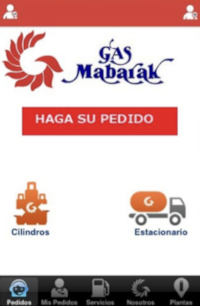
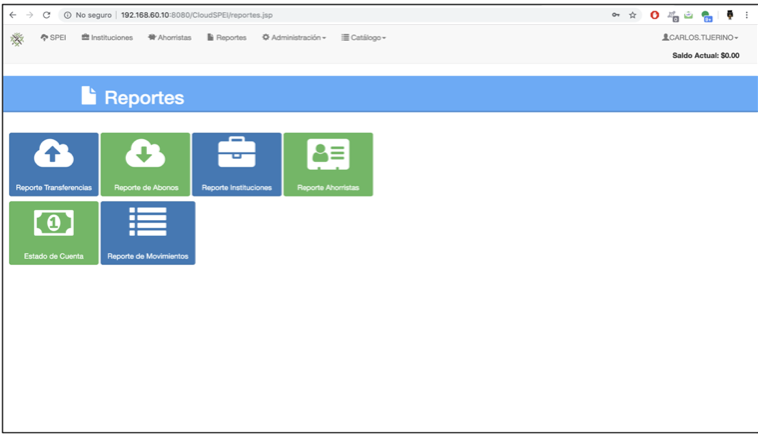
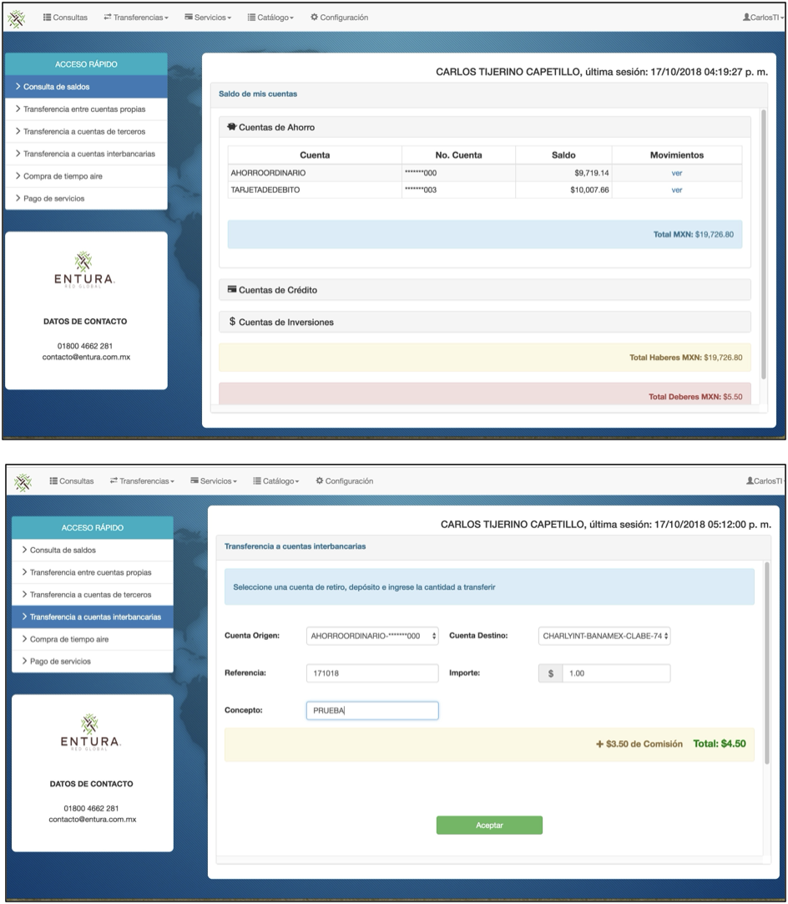
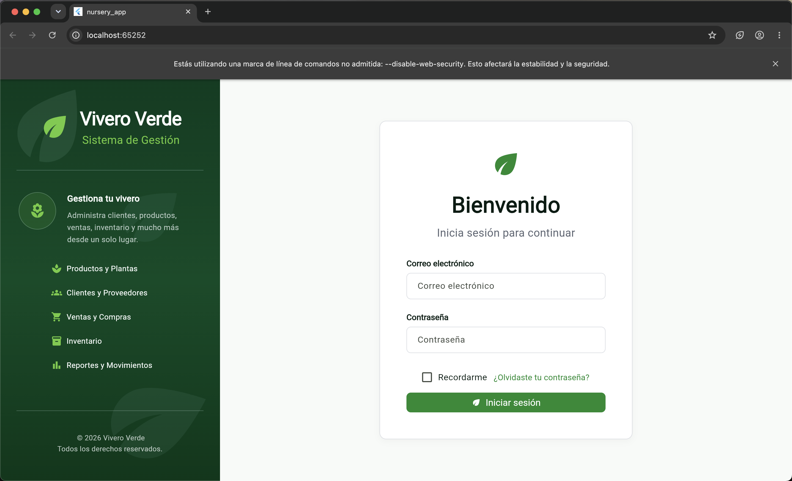

MOBILE DEVELOPER
Construyendo soluciones móviles escalables con Swift, Kotlin & Flutter.
Desarrollador móvil con sede en Querétaro, México, con experiencia en la creación y mantenimiento de aplicaciones para iOS, Android y multiplataforma en los sectores bancario, de seguros y de productos digitales.
mobile_developer.swift
struct Developer {
focus: ["iOS",
"Android",
"Flutter"]
arquitectura: [
"MVVM",
"Clean Architecture"
]
principles: [
"Clean Code",
"Testing",
"Problem Solving"
]
}01 — ABOUT
Construyendo soluciones móviles escalables.
Mobile Developer con amplia experiencia en el desarrollo de aplicaciones móviles para iOS, Android y desarrollo multiplataforma.
Especializado en Swift, Kotlin y Flutter, con experiencia en el diseño de aplicaciones escalables bajo arquitecturas MVC, MVVM y Clean Architecture, integración de SDKs, consumo de APIs REST, publicación en App Store y Google Play Store, desarrollo de pruebas automatizadas (XCTest, Unit Tests y UI Tests), y trabajo bajo metodologías ágiles como Scrum.
iOS
Swift · SwiftUI · UIKit · Objective-C
Android
Kotlin · Android SDK · Java
Cross-platform
Flutter · Dart
Architecture
MVVM · Clean · MVC
02 — TECH STACK
Herramientas con las que trabajo.
Architecture
Networking & Data
Testing & Delivery
SDKs & Observability
Tools
03 — PROYECTOS DESTACADOS
Proyectos en los que he trabajado.

BANKING · MOBILE
SuperMóvil — Santander
Desarrollo y mantenimiento de aplicaciones móviles bancarias para Santander, participando en la implementación de nuevas funcionalidades, integración con servicios REST y mantenimiento de soluciones iOS y Android.
- Desarrollo de funcionalidades utilizando Swift y Kotlin.
- Integración y consumo de servicios mediante APIs REST.
- Participación en Code Reviews y aplicación de buenas prácticas.
- Trabajo colaborativo bajo metodología Scrum.

INSURANCE · MOBILE
Seguros Monterrey
Desarrollo y publicación de una aplicación móvil multiplataforma para Seguros Monterrey, utilizando Flutter, con integración de APIs REST y participación en la implementación de nuevas funcionalidades.
- Desarrollo de funcionalidades utilizando Flutter y Dart.
- Integración y consumo de servicios mediante APIs REST.
- Participación en Code Reviews y aplicación de buenas prácticas.
- Publicación y mantenimiento de la aplicación en App Store y Google Play.

MOBILE · EMPLOYMENT
OCC Mundial
Desarrollo y mantenimiento de la aplicación móvil de OCC Mundial, participando en la evolución de funcionalidades, migración progresiva de Objective-C a Swift, integración de herramientas de analítica y observabilidad, y pruebas automatizadas.
- Desarrollo y evolución de módulos utilizando Swift y UIKit.
- Migración progresiva de componentes legacy de Objective-C a Swift.
- Integración de Firebase Analytics y OpenTelemetry para analítica y observabilidad.
- Implementación de pruebas unitarias y de interfaz de usuario con XCTest.
- Mantenimiento, corrección de incidencias y publicación de la aplicación en producción.

FINTECH · MOBILE
Entumóvil
Aplicación de banca móvil para clientes de cajas populares, con funcionalidades para consulta de saldos y movimientos, transferencias, compra de tiempo aire y pago de servicios.

MOBILE · APPOINTMENTS
Nails & Secrets
Aplicación móvil para la gestión de citas de un salón de manicura, diseñada para facilitar a los clientes la consulta de servicios y programación de sus citas desde el dispositivo móvil.

MOBILE · INVENTORY
MaxiPublica
Aplicación móvil orientada a la gestión y consulta de inventario de vehículos, permitiendo visualizar información detallada y facilitar la comunicación entre usuarios y socios.

MOBILE · GEOLOCATION
Jardinez Mobile
Aplicación móvil para clientes de Jardines de la Paz, con funcionalidades de geolocalización de nichos, consulta de estados de cuenta y contratación de servicios como compra de flores y limpieza de lápidas.

MOBILE · ORDERS
Mabarak
Aplicación móvil para la gestión y solicitud de pedidos de gas, diseñada para facilitar a los usuarios la realización de pedidos desde su dispositivo móvil.

WEB · FINTECH
SIT Entura
Sistema web financiero para la gestión y envío de transferencias SPEI, desarrollado como parte de las soluciones de banca electrónica de Entura.

WEB · BANKING
Banca en línea
Plataforma web de banca electrónica para la consulta de cuentas y realización de operaciones financieras, incluyendo transferencias y pagos.

PERSONAL PROJECT · SAAS
SaaS para viveros
Plataforma SaaS para la administración de viveros, compuesta por una aplicación móvil para clientes y una plataforma web para gestionar productos, inventario, ventas, clientes y operaciones del negocio.
04 — LEGACY MODERNIZATION
Objective-C → Swift
Una de las experiencias técnicas más relevantes de mi carrera en iOS ha sido la migración progresiva de componentes existentes en producción hacia Swift, manteniendo la estabilidad de la aplicación.
01
Analyze
Comprender el código y las dependencias existentes.
→
02
Migrate
Migrar componentes a Swift de forma progresiva.
→
03
Test
Validar el comportamiento mediante pruebas automatizadas.
→
04
Release
Mantener la estabilidad de la aplicación en producción.
05 — ARCHITECTURE
Cómo estructuro las aplicaciones móviles.
MVVM
View
↓
ViewModel
↓
Service / Use Case
↓
Models
↓
API
Clean Architecture
Presentation
Domain
Data
Separación de responsabilidades, testabilidad y mantenibilidad como objetivos principales.
Testing
- Pruebas unitarias para la lógica de negocio.
- Pruebas de interfaz de usuario para flujos críticos.
- Validación de regresión antes de los lanzamientos.
- Mentalidad de calidad orientada a producción.
06 — EXPERIENCIA
Trayectoria profesional.
NOV 2024 — JUL 2026
Mobile Developer
EY Technology Solutions
- Aplicaciones bancarias desarrolladas con Swift y Kotlin.
- Desarrollo y publicación de aplicaciones Flutter para Seguros Monterrey.
- Desarrollo de nuevas funcionalidades.
- Integración con APIs REST.
- Revisiones de código y buenas prácticas.
- Metodología Scrum.
APR 2020 — SEP 2024
iOS Developer
OCC Mundial
- Desarrollo de nuevos módulos móviles.
- Migración de componentes Objective-C a Swift.
- Integración de Firebase Analytics y OpenTelemetry.
- Pruebas unitarias y pruebas de interfaz de usuario.
- Mantenimiento y publicación de la aplicación.
JUN 2016 — APR 2020
Software Developer
Entura
- Aplicaciones para iOS y Android.
- Aplicaciones web utilizando Java.
- Integraciones REST y SOAP.
- Soluciones de banca electrónica y SPEI.
JUL 2013 — MAY 2016
Mobile Developer
Tlaltek
- Desarrollo de aplicaciones para Android e iOS.
- Aplicaciones multiplataforma con Appcelerator.
07 — EDUCATION
Engineering background.
2009 — 2013
Ingeniería en Sistemas Computacionales
Instituto Tecnológico de Veracruz · Titulado
08 — PROFESSIONAL SKILLS
Resolución de problemas
Trabajo en equipo
Comunicación efectiva
Proactividad
Adaptabilidad
Atención al detalle
09 — CONTACT
Construyamos algo útil.
Abierto a oportunidades como Mobile Developer, iOS Developer o Mobile Engineer en México y remoto.